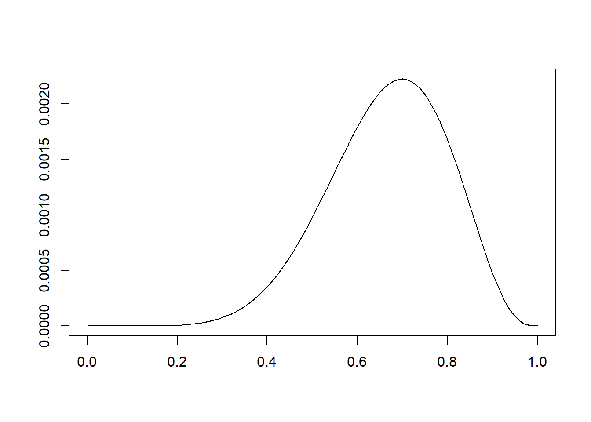
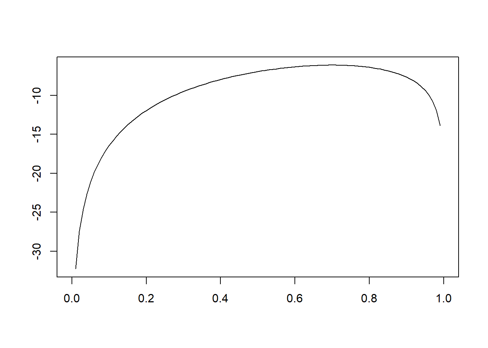
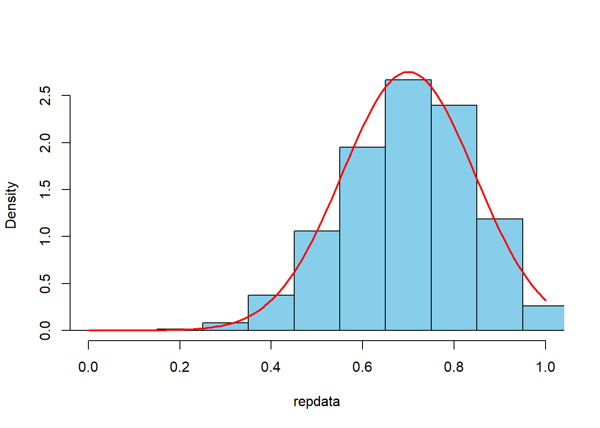

第8章 統計的推定(1): 点推定
ここでは，講義ノートの例に従って，最尤法を実際に試みてみる．
8.1 データ
1,0のベルヌーイ試行を10回繰り返したところ，以下のデータを得た．
ここでは，独立同分布のベルヌーイ分布を確率モデルとして，ベルヌーイ分布のパラメータ\(q\)を最尤推定(maximum likelihood estimatin)によって推定する． \[x_1,x_2,\ldots,x_{n} \sim_{iid} p(x|q) \] \[p(x_i|q) = q^{x_i}(1-q)^{1-x_i}\]
8.2 尤度・対数尤度
尤度の関数を実装する．独立同分布の仮定より尤度は， \[\begin{align*} p(\{x_i\}|q)&=\prod_{i=1}^n p(x_i|q) \\ &=q^{\sum x_i}(1-q)^{n-\sum x_i} \end{align*}\] となる．
LL_Bern<-function(x,q) {
q^sum(x)*(1-q)^(length(x)-sum(x))
}
plot(seq(0,1,0.01),LL_Bern(data,seq(0,1,0.01)),type="l",
xlab="",ylab ="",main="")
対数尤度は， \[\begin{align*} \log p(\{x_i\}|q)&=\sum_{i=1}^n \log p(x_i|q) \\ &=\sum_{i=1}^n x_i \log q+ \left(n-\sum_{i=1}^n x_i\right)\log(1-q) \end{align*}\] となる．
logLL_Bern<-function(x,q) {
sum(x)*log(q)+(length(x)-sum(x))*log(1-q)
}
plot(seq(0,1,0.01),logLL_Bern(data,seq(0,1,0.01)),
type="l",xlab="",ylab ="",main="")
尤度・対数尤度の最大化問題を解くと，最尤推定値が得られる．
## $maximum
## [1] 0.6999843
##
## $objective
## [1] 0.002223566## $maximum
## [1] 0.7000058
##
## $objective
## [1] -6.1086438.3 推定誤差
一般に，ベルヌーイ分布のパラメタ\(q\)のMLEは，標本平均である． \[q_{\mathrm{ML}}=\bar{X}=\frac{\sum_{i=1}^nx_i}{n}\] このとき，中心極限定理により，\(q_{\mathrm{ML}}\)の標本分布は平均\(q\)，分散\(q(1-q)/n\)の正規分布に近似すると予想できる．
このことを確かめるために，\(q=0.7\)のベルヌーイ分布から，\(n=10\)のサンプルを抜き出してMLEを計算する，これを\(r=10000\)回繰り返す（ブートストラップ法という）．
q<-0.7
n<-10
r<-10000
repdata<-replicate(r,mean(rbinom(n,1,q)))
hist(repdata, prob=TRUE,xlim=c(0,1),
breaks=seq(-0.05,1.05,0.1),col="skyblue",main="")
curve(dnorm(x,q,sqrt(q*(1-q)/n)),0,1,col="red",lwd=2,add=TRUE)
repdataの平均は0.69944\(\approx q\)であり，標準偏差は0.1444914\(\approx \sqrt{q(1-q)/n}\)となる．